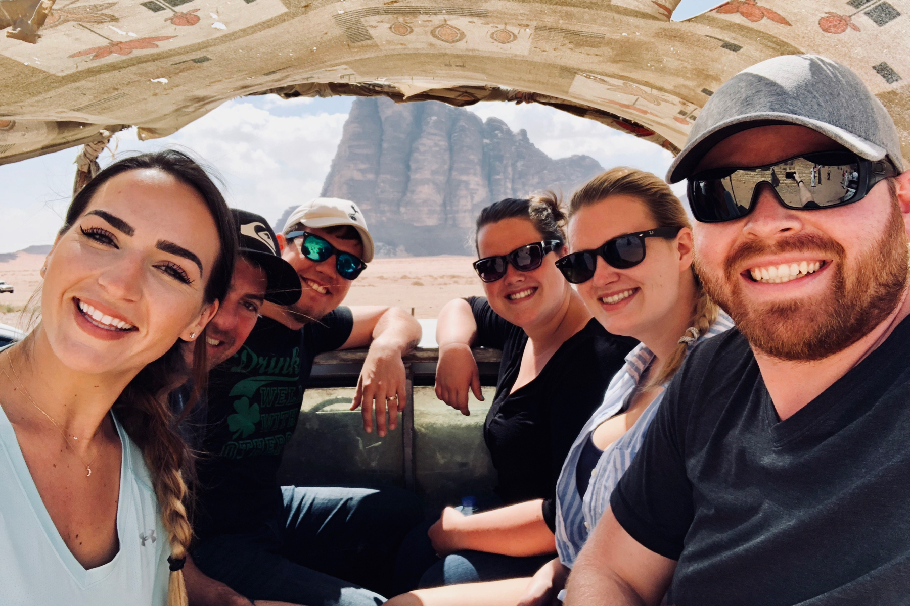
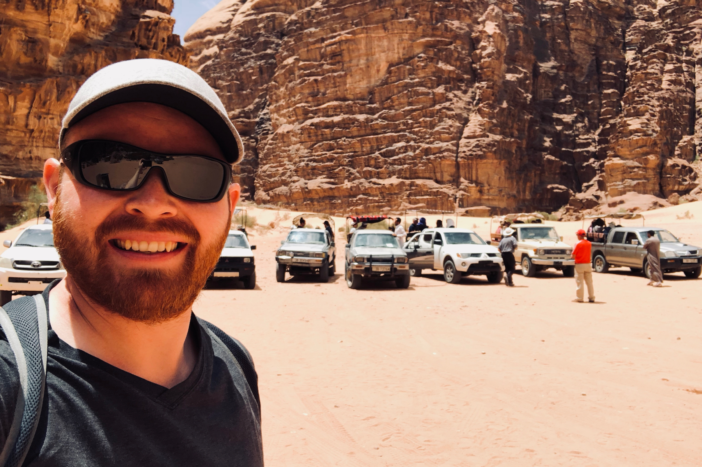
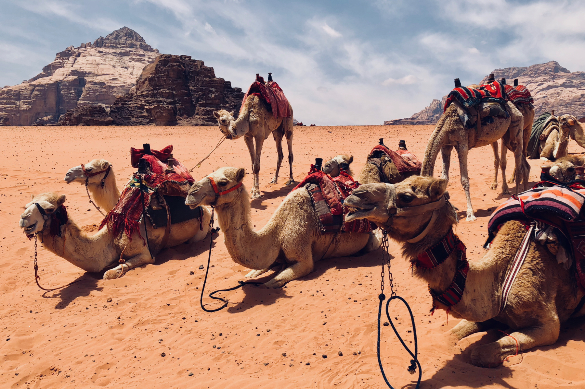
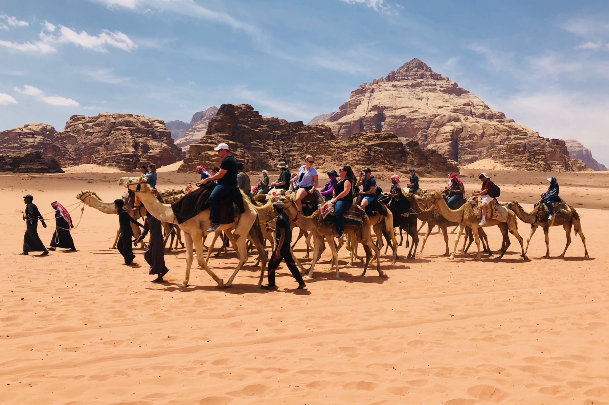
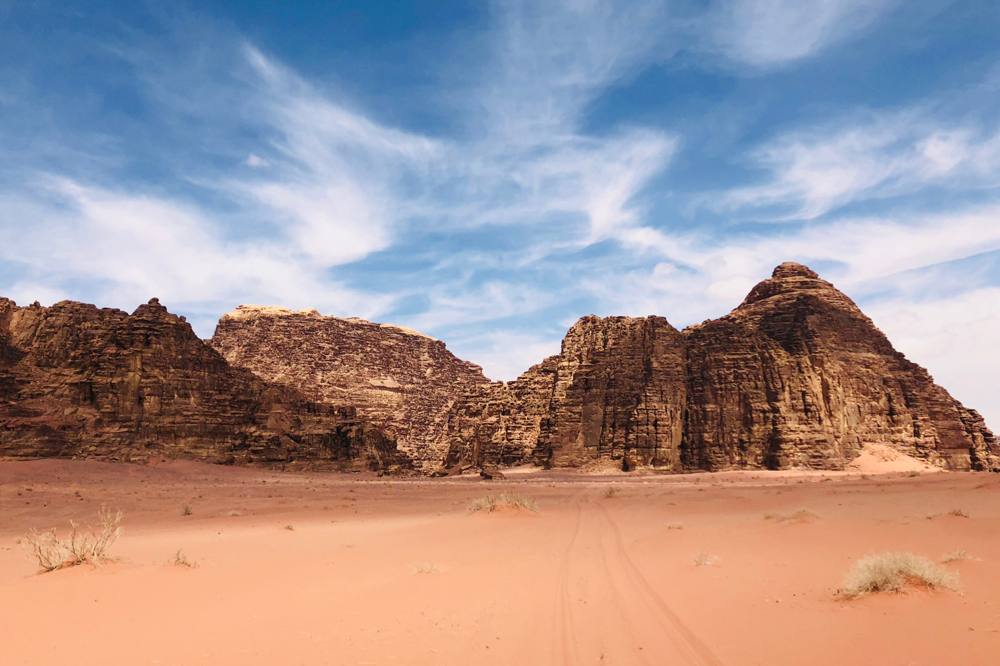

Mars on Earth - The Wadi Rum Desert in Jordan

Wadi Rum’s Hollywood Fame and Tourism
Wadi Rum is an iron-rich desert in the south of Jordan which is famous for its Mars-like landscapes. The iron and mineral content of the sand here gives the desert a red coloring which is unlike anything you can see elsewhere on the planet. Because of this, Wadi Rum has become a popular destination for Hollywood to film. Films such as Lawrence of Arabia, which kickstarted the tourism industry in this area of Jordan, and more recently, The Martian, have brought fame and tourism to the desert for decades.
Getting to Wadi Rum is actually a lot easier than you might suspect. If you are already in the area, visiting other parts of Jordan, or Israel, don’t miss the opportunity to visit this fascinating place.
Wadi Rum In a Nutshell
- Highlights - Breathtaking views unlike anything else you can see. Even though it is a desert, there are some historical markers and interesting stories to walk in the footsteps of. Great hospitality from the locals.
- Lowlights - Without a jeep, camel, or guide, I couldn’t imagine spending more than a day here.
- Bottomline - Though some consider Wadi Rum to be the best Middle Eastern destination for hikers, climbers, campers, and nature lovers, I wouldn’t recommend spending more than 24-hours in Wadi Rum. But don’t dare come within 100km and not come here for at least half a day. It is amazing!
Human History in the Desert
Tens of thousands of petroglyphs and inscriptions have been found on the rocks of Wadi Rum, which date roughly 12,000 years of human presence in the area. The Bedouin people and culture have the longest steady claim in the area, but the origins of human civilization and migration are rooted in Wadi Rum and the surrounding areas.
Even the nearby site of the City of Petra, which was the capital of the mysterious Nabataeans, only dates back a fraction as long as that of early humans.
But enough with the human history: what can people do here today? Well, people still live here and carry on a desert and nomadic culture. Though trade was once the core of the local economy, like that of the Silk Road, Wadi Rum now flourishes on tourism.
 My new friends from the Wadi Rum tour, including Tiffany Tchouboukjian (opposite from me), pilled up in the back of a truck for our desert jeep tour
Tours of Wadi Rum
I booked a multi-day group tour from Abraham Tours in Israel, so I didn’t have to organize anything on my own. To be honest, you could come here on your own that that would be just fine, but I found the service of a tour company and guide to be well worth the relatively low cost just so that I wouldn’t have to worry about the border crossings or transportation and lodging logistics. Abraham Tours did a great job and I recommend them to you, but you can also do a Google search to see if you find something better.
Pro Tip: Abraham Tours is owned by Abraham Hostels, which has locations in Tel-Aviv and Jerusalem. If you book a room at the hostel, you get a 10% discount on any tour. In this case, a $20 room saved me $50 on the tour. So it was like getting $30 cash-back and a free room for a night!
The tour included stops in Jerash, Amman, Petra, and lastly (but most certainly not lastly), Wadi Rum. The tour group included 30 people from all walks of life, but everyone was pretty much awesome. By the time we arrived at Wadi Rum, we were all buddies for sure.
The Wadi Rum tour consisted of three parts: jeep tour, camel tour (optional), lunch. Jeep is the best way to get around the desert, I believe. We only ever got stuck in the sand once!
 The jeeps line up at the Lawrence Memorial Bedouin Camp.
Camels of Wadi Rum
For those of you who have read my articles for some time now, you might have noticed I sometimes obsess on camels a bit. I don’t know where this comes from. I think they just photograph nicely and are somehow exotic animals in exotic landscapes. But just the same, when I see a camel, I jump at the opportunity to learn about them.
In Wadi Rum, you will see two types of camels when you visit: those which are saddled and prepped for safari and those which are just walking free. However, none of these camels are wild. They are all domesticated and all belong to someone. Camels are left to free-range grazing and wandering off to their favorite watering hole because they pretty much always return home to their owner. They are quite loyal like that.
Camels do go missing from time to time, but according to the guides I spoke with, they didn’t seem too worried about it because the camels always turn up somewhere soon enough. It is sort of like what we say in the USA, “it all comes out in the laundry,” meaning that whatever balance needs to be found, it will be eventually. So no stress!
And here is something new I learned: when you see camels freely walking in a straight line, it means they intend to walk a really long distance! I wonder if that has to do with aerodynamics?
 Camels of the Wadi Rum Desert in Jordan
Desert Camel Safari
Despite my weird love for camels, when offered the optional opportunity to take a camel safari in Wadi Rum: I declined. It was going to be an extra $20 and I already had enough desert camel safari when I was in Pushkar, India. But if you have never ridden a camel: do it here! The camels were more well-behaved than the ones in India, and though both the Rajasthan and Wadi Rum deserts are majestic, this one is pretty unique.
This camel safari only lasted 20-30 minutes and ended at the Lawrence Memorial Bedouin Camp where I was already waiting for everyone, as I came in a jeep. This also meant I had more time for drinking the incredible (and incredibly sweet) Bedouin tea!
 The camel safari of the Wadi Rum Desert
Petroglyphs and Inscriptions
Right, so I mentioned the 12,000-year-old origins of humans in the area. Wadi Rum is scattered with more than 40,000 known petroglyphs and inscriptions on the rocks. The point of our tour where the camel safari began is one such point of interest where these markings are clearly visible. Luckily, the markings are very much out of reach without a ladder, which is probably one of the reasons they have lasted for so long.
Petroglyphs and inscriptions in Wadi Rum date as far back as 10,000 B.C.
No Filter Needed
I am occasionally guilty of applying some filter or editing touches to photos. But I wanted to highlight that the next landscape photo is totally untouched. This is just how the place looks. And this was taken with an iPhone, not a professional camera, which means the color depth of the photo is not nearly as rich as the real-life view of Wadi Rum. This place is just truly spectacular, and at every turn, you better be prepared to lose your breath!
 The Seven Pillars of Wisdom rock formation in Wadi Rum, Jordan
I hope you enjoyed this article! Have you been to Wadi Rum before? What did I miss? What questions do you have? Please contribute your thoughts below in the comments. Safe travels!